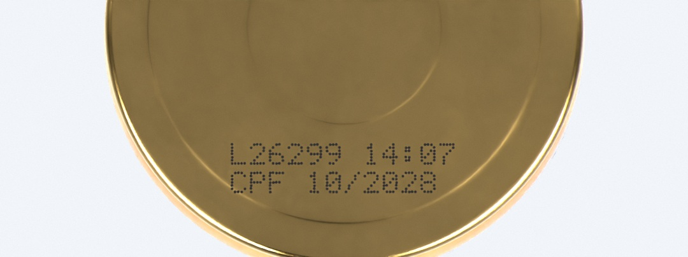
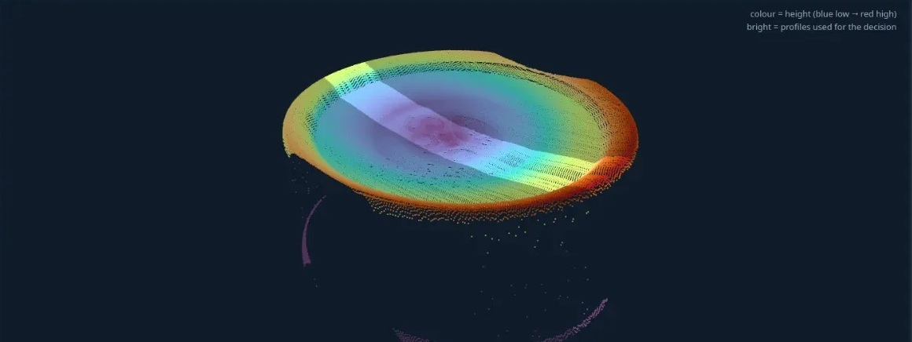

La forma de la tapa, envase a envase
Si falla el cierre o entra aire, la tapa pierde la deformación producida por el vacío y su centro sube. El perfilómetro mide cada tapa en el transportador y compara su forma con un patrón aprendido de tapas buenas: también detecta abolladuras o una tapa distinta.

Vacío correcto

Centro abombado

Fuera de patrón

Lote impreso
Lectura o verificación de la fecha y el lote impresos en la propia tapa, sin cámara adicional.
Vista 3D
Cada tapa se reconstruye en 3D a partir de sus perfiles. Se ve dónde se ha deformado y se compara con el patrón aprendido de tapas buenas.
